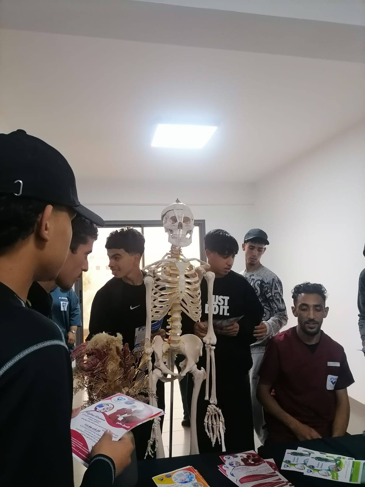
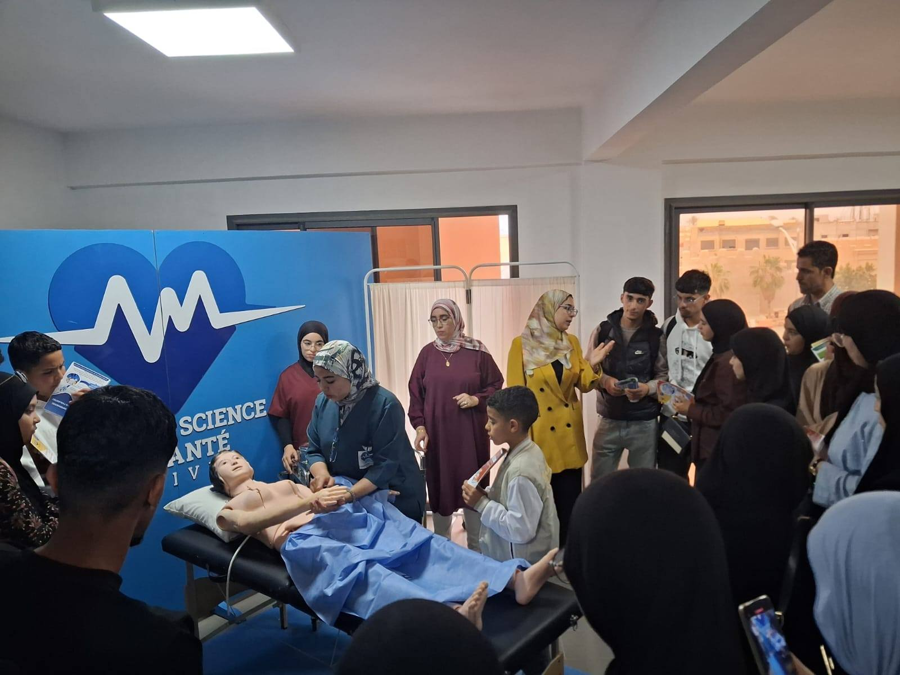
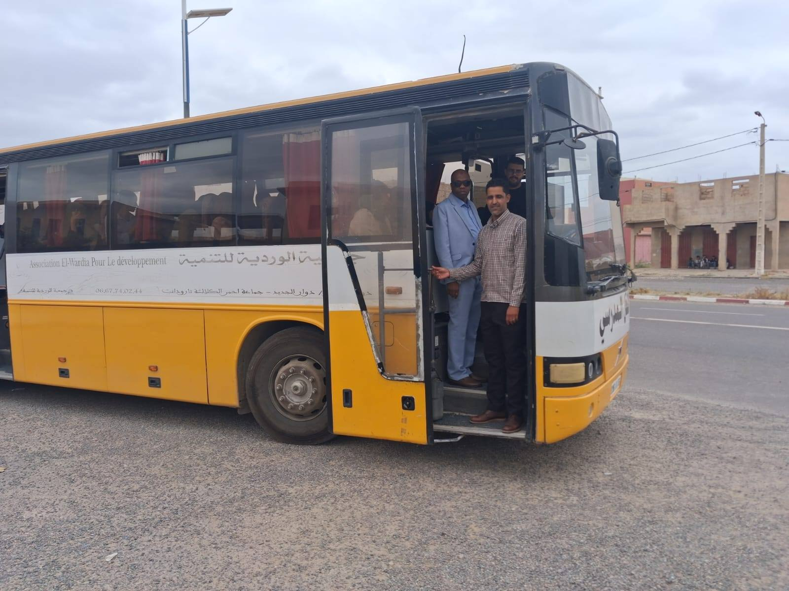
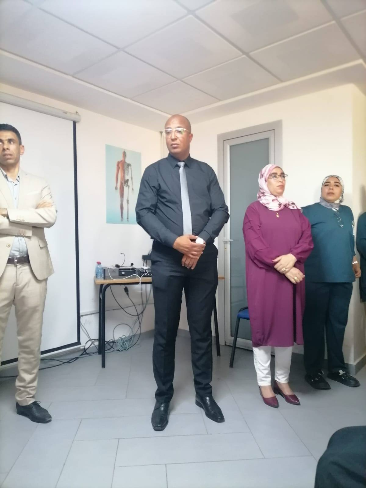

خاتمة
وفي الختام، كانت الزيارة ناجحة وحققت أهدافها التربوية والتوجيهية، وسيتم استثمار نتائجها في حصص التوجيه التربوي المقبلة.
فالشكر كل الشكر إلى جمعية آباء وأولياء أمور التلاميذ، وإلى جمعية الوردية للنقل المدرسي، كما يتوجه الشكر إلى أطر معهد كامبوس لمهن التمريض فرع تارودانت، وإلى الأطر الإدارية والتربوية العاملة بالمؤسسة، وإلى كل المتدخلين من سلطات محلية ومنتخبة، وكذا أولياء أمور التلاميذ، وبناتنا وأبنائنا المتعلمات والمتعلمين.




